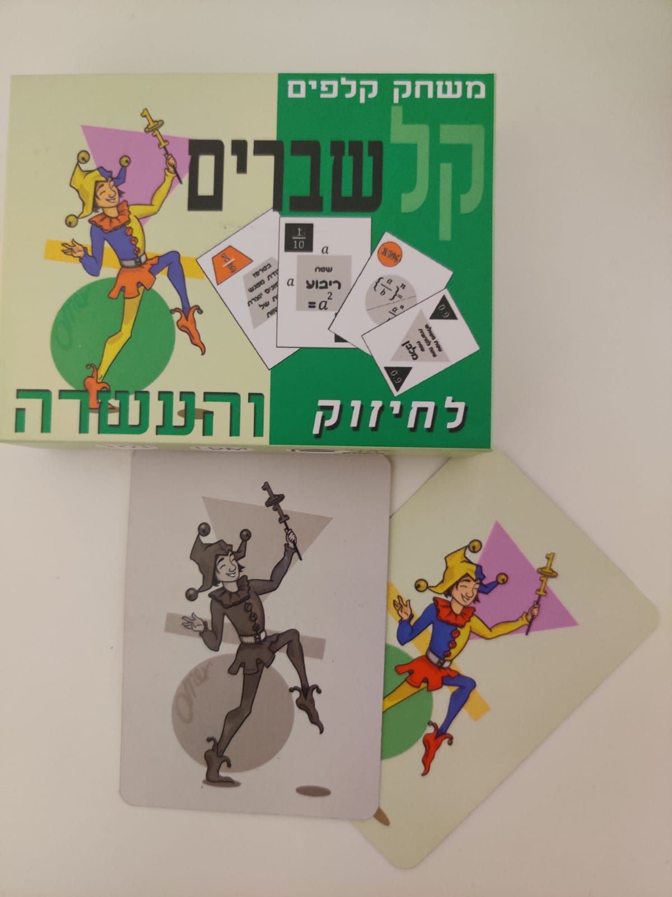
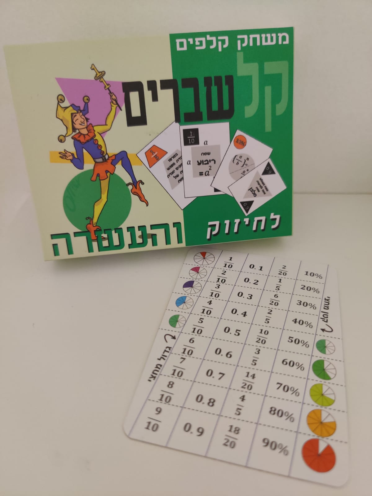

קלשברים - משחק קלפים מתמטי שפותח בשנת 2019 במכללת גורדון בקורס פיתוח משחקים מתמטיים אצל דר ליאורה נוטוב. יוצר המשחק הוא פבל רסקין (22.01.1992), מורה לחשבון בבית ספר יסודי ובוגר תואר ראשון למדעים ומתמטיקה.
חפיסת הקלפים "קלשברים" משלבת בתוכה שברים, אחוזים ומספרים עשרוניים מסוגים שונים, ובעזרת קלפים אלה ניתן לשחק כמעט בכל משחק קלפים מוכר שאת ההוראות אליו מוכרות מראש ותוך כדי משחק להכיר שברים, מספרים עשרוניים, אחוזים ואת הקשר ביניהם ללא שום מאמץ.
36 קלפי משחק שמחולקים ל-4 קבוצות שונות;
|  | 2 קלפי ג'וקר המייצגים את השלם בכל המשחקים. |
| הוראות | 3 קלפים עם הוראות |
בנוסף למשחק עצמו בתוך החפיסה על גבי הקלפים הילדים נחשפים לנוסחאות, משפטים והיגדים שונים הקשורים לעולם המתמטיקה. משפטים אלה נמצאים מול עיניהם של הילדים ומטרתם העיקרית היא לחשוף את הילדים ולהעצים את הסקרנות שלהם לקראת הנושאים העתידיים שהם הולכים להכיר בכיתות מתמקדמות יותר.
המשחק מיועד לילדים מגיל 10+, למורים, סטודנטים ואנשים שונים שאוהבים משחקי קלפים ועל הדרך גם רוצים ללמוד.
חזרה לעמוד הראשי